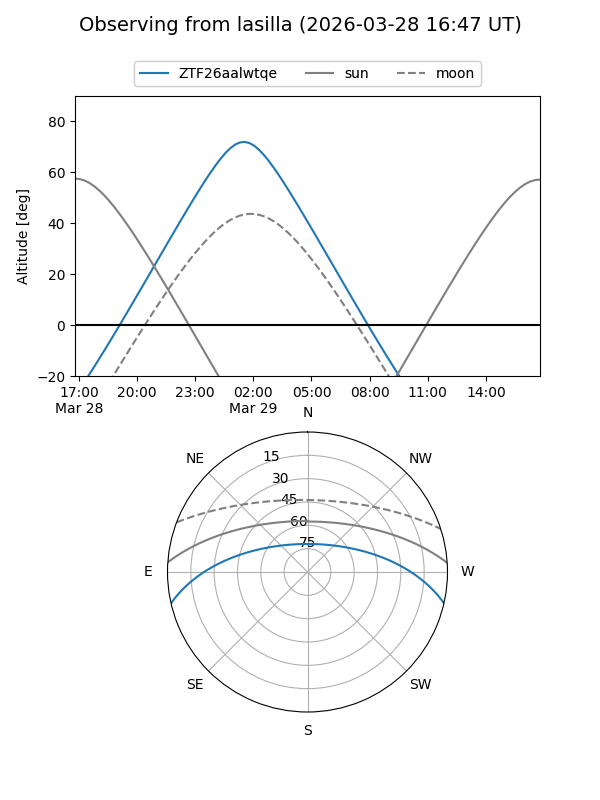
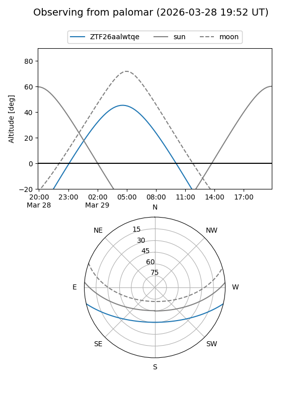

ZTF26aalwtqe
Target ZTF26aalwtqe at 2026-03-29 06:40
Aliases and brokers:
FINK: link
Lasair: link
ALeRCE: link
alt names
ZTF26aalwtqe (ztf,fink_ztf)
Coordinates:
equatorial (ra, dec) = 138.0451,-11.12073
equatorial (HMS+DMS) = 09:12:10.82,-11:07:14.64
galactic (l, b) = (241.1029,+24.53548)
Flags:
Photometry:
last ztfg=16.82, ztfr=16.48
1 ztfg, 1 ztfr detections
Lightcurve
Visibility


Additional plots